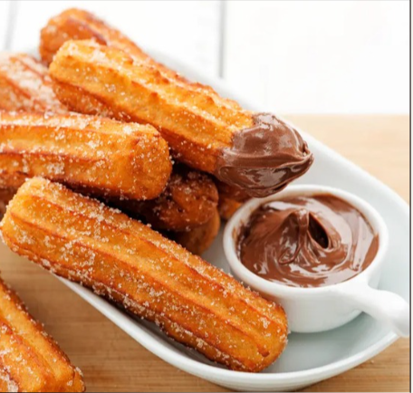

Madrid è la capitale della Spagna e una delle città più dinamiche d’Europa. Ricca di storia e tradizioni,
offre importanti musei come il Prado, ampie piazze e quartieri vivaci. È anche un centro moderno, noto per la sua cultura,
la gastronomia e la vita notturna.
Luoghi iconici
Il Palazzo Reale di Madrid è la residenza ufficiale del re di Spagna, anche se oggi viene utilizzato soprattutto per cerimonie e visite. È un edificio imponente, famoso per le sue sale decorate, gli affreschi e i giardini circostanti.
La Puerta de Alcalá è un arco monumentale costruito nel XVIII secolo per celebrare l’ingresso alla città. Si trova vicino al Parco del Retiro ed è considerata uno dei simboli più rappresentativi di Madrid.
Plaza Mayor è una grande piazza storica situata nel centro di Madrid. In passato era il luogo di mercati, feste e eventi importanti; oggi è un punto di ritrovo per turisti e cittadini.
La gastronomia di Madrid riflette la tradizione castigliana ed è caratterizzata da piatti semplici ma molto saporiti.
Uno dei piatti più famosi è il cocido madrileño, uno stufato ricco a base di ceci, carne e verdure, tipico soprattutto nei mesi invernali.
Molto diffuso è anche il bocadillo de calamares, un panino con calamari fritti, simbolo della cucina popolare madrilena.
Nei bar della città sono comuni le tapas, piccoli piatti da condividere che includono salumi, formaggi e specialità locali. Per quanto riguarda i dolci, i più tradizionali sono i churros,
spesso serviti con una tazza di cioccolata calda. La cucina di Madrid rappresenta un importante elemento della cultura e della vita quotidiana della città.

Conclusioni
In conclusione, Madrid rappresenta una città completa e ricca di fascino, dove storia, cultura e tradizioni convivono in modo armonioso. I suoi monumenti più importanti testimoniano il passato della capitale e il
suo ruolo centrale nella storia della Spagna. Allo stesso tempo, la gastronomia locale permette di scoprire sapori autentici legati alla vita quotidiana e alle tradizioni popolari.
Grazie alla sua atmosfera vivace, alla cultura
e all’accoglienza dei suoi abitanti, Madrid è una città capace di lasciare un ricordo duraturo in chi la visita.